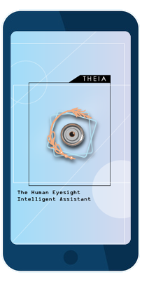
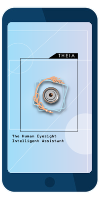
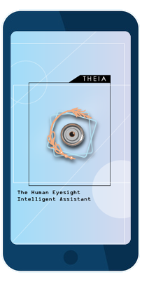
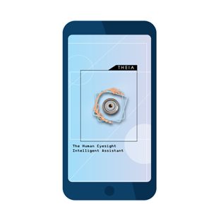
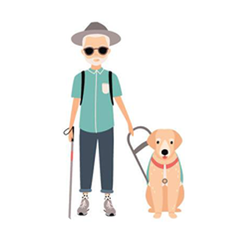

The Human Eyesight
Intelligent Assistant
 

The Human Eyesight
Intelligent Assistant

About Theia
Theia application if came from a greek god Theia which is a goddess of sight.
The Developers want to raise awareness about visual impairment through the application
and also be the assistant to those who suffer vision.
Thus Theia, the "Goddess of Sight"
Recognize objects in real-time as
you move your phone
Object Detection
common objects can be identified
and heard
Color Detection
can identify RGB colors
How To Use T.H.E.I.A
Step 1:
Open T.H.E.I.A application
Step 2:
Adjust Screen Color base
on your preference
Step 3:
Choose a Category. Object
Detection or Color Detection
Experience It Now
I'm THEIA
Your Personal Assistant
Visual Impairment
We are committed to educating the community about vision impairment and the rights of people who are blind or vision impaired.
Being aware of blindness and vision loss means making an effort to ensure everyone has access to facilities,
services and support within the community, and understanding how to interact and
communicate with people who are blind and vision impaired.
__________________________________________________
Difference of Visual Impairment and
Legal Blindness
Visual Impairment is the severe form of low vision that cannot be
corrected by any means. ie: glasses, contact lenses, surgery.
Legal Blindness is only a legal term
How does normal task differ from
a person with visual impairments
to those who are not affected?
The Level of Productivity is mostly the one affected, for
one visually impaired, it is required to have at least
1-2 household help, instead of doing individual task
and businesses the helpers do not progress.

What does legally blind people usually
see and does it differ from one legally
blind person to another?
In General, Blurred Vision, they cannot distinguish the face
of who they are talking to, they cannot see their pathways clearly.
Specifically, and in terms of severity, Counting Fingers,
where they can distinguish how many fingers is being shown to them,
Hand Movement, where they cannot distinguish how many fingers is being
shown to them, all they know is there is a hand in front of them. Light Perception,
cannot distinguish, nor determine what is being shown to them,
all they know is there is Light in front of them.
Contacts

Hazel
Errold
Juan
Ramon
Mamer


The Human Eyesight Intelligent Assistant
All rights reserved 2019